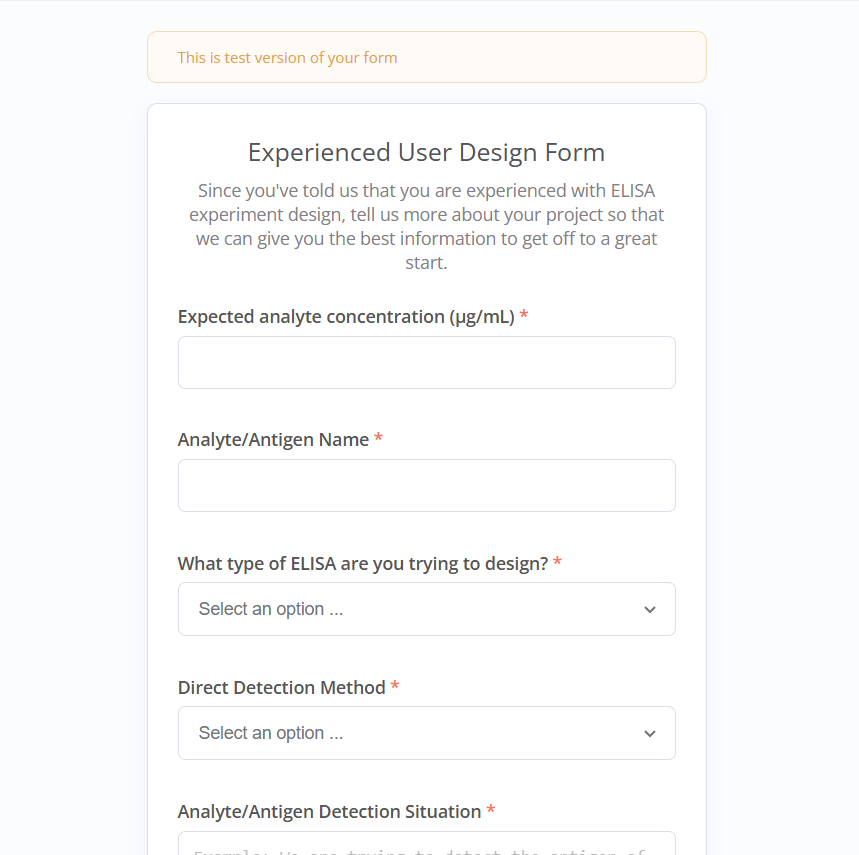

BioAssayBuddy is an intelligent assistant designed to democratize bioassay development expertise. It is meant to provide personalized assay development support taking into account your comfortability with the assay. It can help you plan a new experiment or assist with ongoing experiments. You tell it the specific development problem you are facing and will address it accordingly. Currently you can interact with the AI agent through using the link below and answering the webform questions.
Bioassay development can be time-consuming and prone to trial-and-error. Researchers often face challenges in optimization, troubleshooting, and data interpretation, leading to delays and increased costs. There is a high demand for qualified assay development professionals, therefore it is difficult for small firms to hire and retain talent. Assay Development can be rather complex and the time spent training new individuals on assay development skills could be better spent on experiment execution.
Our AI-powered assistant provides actionable guidance, answers technical questions, and helps design more efficient experiments. BioAssayBuddy brings consistency, speed, and confidence to your workflow. It is trained on relevant experiment procedures and troubleshooting methods. Through a dynamic prompting method, the AI agent is able to provide tailored advice on how to proceed with your development experiment. The AI agent also has tools to assist it with analyze relevant experiment data, further refining the recommendations it provides.
The user starts by entering high level experiment information in a webform. The information is used to dynamically create a prompt that is then provided to the agent so that it can provide tailored recommendations. The recommendations are then emailed to the user at the email they provided.
Here’s the webform welcome page when user details are provided:
Here's the webform page where the user provides some high level info like type of experiment and their level of comfortablity:
Here is the main webform page where the user provides detailed experiment information (in the case they they are experienced with the assay):
Here is an example email that is generated from the AI agent based on the information provided:
Currently the MVP can be used to optimize ELISA experiment parameters. The workflow takes into account different user experience levels and can be used to guide unfamilair operators through development projects. In the future, it will be able to help the user figure out where to source reagents and materials through interacting with databases.
Currently the team consists of a solo developer Emmitt J Tucker. He is a graduate student at Northeastern University and has years of industry experience in the biotech sector specializing in assay development. He is passionate about the potential for Human-AI collaboration in the sciences and seeks to build products that will help make humanity more productive.